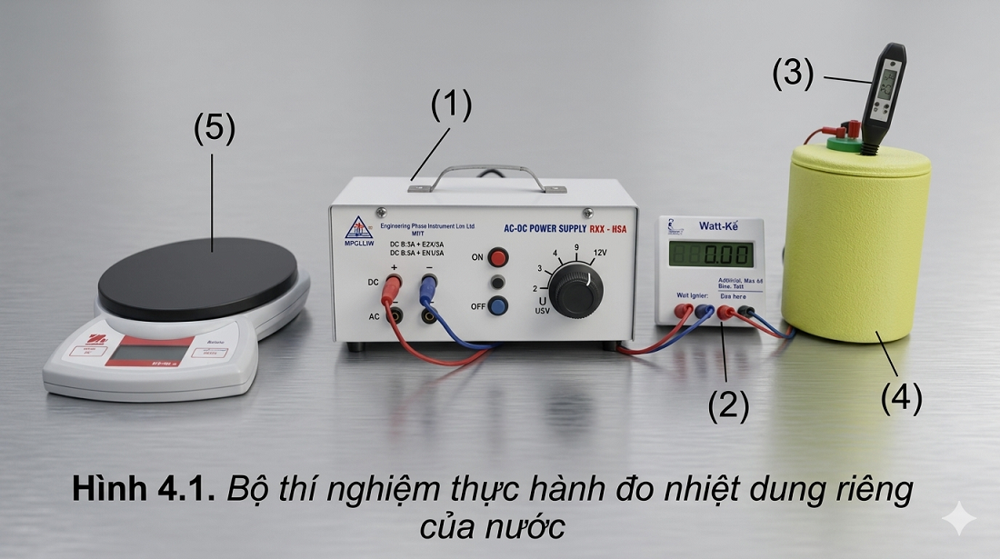
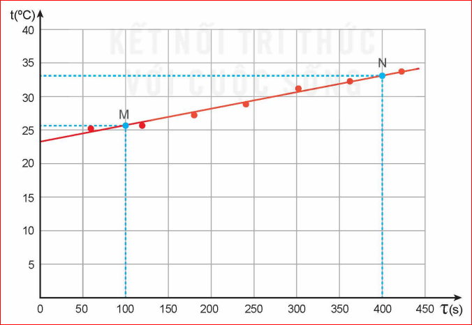

Các hiện tượng quan sát được hằng ngày cho thấy độ lớn của nhiệt lượng cần cung cấp cho vật để làm tăng nhiệt độ của nó phụ thuộc vào các yếu tố sau:
Hãy tìm ví dụ trong đời sống để minh hoạ cho nội dung trên.
Các thí nghiệm chứng tỏ rằng nhiệt lượng \(Q\) cần cung cấp cho vật để làm nó nóng lên tỉ lệ thuận với khối lượng \(m\) và độ tăng nhiệt độ \(\Delta T\) của vật nên:
Trong đó: \(Q\) là nhiệt lượng cần truyền cho vật (J); \(m\) là khối lượng vật (kg); \(\Delta T\) là độ tăng nhiệt độ của vật (K hoặc \(^\circ\text{C}\)).
Với mỗi chất, hằng số trong hệ thức trên có độ lớn riêng. Hằng số này gọi là nhiệt dung riêng của chất làm vật, kí hiệu là \(c\), có giá trị là:
Do đó, hệ thức tính nhiệt lượng trong quá trình truyền nhiệt để làm thay đổi nhiệt độ của vật là:
Bảng 4.1. Giá trị gần đúng nhiệt dung riêng của một số chất
| Chất | Nhiệt dung riêng (\(\text{J/kg.K}\)) | Chất | Nhiệt dung riêng (\(\text{J/kg.K}\)) |
|---|---|---|---|
| Nước | 4 200 | Đất | 800 |
| Nước đá | 2 100 | Sắt | 440 |
| Không khí | 1 000 | Đồng | 380 |
| Thủy tinh | 840 | Thủy ngân | 140 |
| Chì | 130 | ||
Nhiệt dung riêng của một chất là nhiệt lượng cần truyền cho 1 kg chất đó để làm cho nhiệt độ của nó tăng thêm \(1^\circ\text{C}\) (hoặc 1 K).
Nhiệt dung riêng là thông tin quan trọng thường được dùng khi thiết kế các hệ thống làm mát, sưởi ấm,...
1. Biết nhiệt dung riêng của nước lớn gấp hơn hai lần của dầu, tại sao trong bộ tản nhiệt (làm mát) của máy biến thế, người ta lại dùng dầu mà không dùng nước như trong bộ tản nhiệt của động cơ nhiệt?
2. Hãy dựa vào giá trị của nhiệt dung riêng của nước và của đất trong Bảng 4.1 để giải thích tại sao ban ngày có gió mát thổi từ biển vào đất liền, ban đêm có gió ấm thổi từ đất liền ra biển.
3. Một thùng đựng 20 lít nước ở nhiệt độ \(20^\circ\text{C}\). Cho khối lượng riêng của nước là \(1000\,\text{kg/m}^3\).
a) Tính nhiệt lượng cần truyền cho nước trong thùng để nhiệt độ của nó tăng lên tới \(70^\circ\text{C}\).
b) Tính thời gian truyền nhiệt lượng cần thiết nếu dùng một thiết bị điện có công suất 2,5 kW để đun lượng nước trên. Biết chỉ có 80% điện năng tiêu thụ được dùng để làm nóng nước.
Lời giải:
Đổi \(V = 20\,\text{lít} = 0,02\,\text{m}^3 \rightarrow m = D \cdot V = 1000 \cdot 0,02 = 20\,\text{kg}\).
a) Nhiệt lượng cần thiết:
\[ Q = m \cdot c \cdot \Delta T = 20 \cdot 4200 \cdot (70 - 20) = 4.200.000\,\text{J} = 4,2\,\text{MJ} \]
b) Điện năng toàn phần cần tiêu thụ \(H = 80\% = 0,8\):
\[ A = \frac{Q}{H} = \frac{4.200.000}{0,8} = 5.250.000\,\text{J} \]
Thời gian đun nước với công suất \(P = 2,5\,\text{kW} = 2500\,\text{W}\):
\[ t = \frac{A}{P} = \frac{5.250.000}{2500} = 2100\,\text{giây} = 35\,\text{phút} \]
Xác định nhiệt dung riêng của nước.

Hình 4.1. Bộ thí nghiệm thực hành đo nhiệt dung riêng của nướcThảo luận trả lời các câu hỏi thiết kế phương án:
Hướng giải quyết:
1. Cần đo: Khối lượng nước \(m\), nhiệt lượng \(Q\) cung cấp và độ tăng nhiệt độ \(\Delta t\).
2. Nhiệt lượng nước thu được tỏa ra từ dây điện trở khi có dòng điện chạy qua.
3. Xác định nhiệt lượng thu được bằng công suất điện và thời gian: \(Q = P \cdot \tau\).
4. Các bước: Đo khối lượng nước \(m\) \(\rightarrow\) Đo nhiệt độ ban đầu \(\rightarrow\) Bật nguồn, đọc công suất \(P\) và thời gian \(\tau\) \(\rightarrow\) Đọc nhiệt độ lúc sau \(\rightarrow\) Tính \(c\).
Bảng 4.2. Ví dụ về kết quả thí nghiệm đo nhiệt dung riêng của nước (\(m = 0,15\,\text{kg}\))
| Thời gian \(\tau\) (s) | 60 | 120 | 180 | 240 | 300 | 360 | 420 |
|---|---|---|---|---|---|---|---|
| Nhiệt độ \(t\) (\(^\circ\text{C}\)) | 25,2 | 25,4 | 27,0 | 28,7 | 31,2 | 32,3 | 33,8 |
| Công suất (W) | 15,04 | 15,07 | 15,03 | 15,94 | 15,84 | 15,94 | 15,94 |
Vẽ đồ thị nhiệt độ \(t\) theo thời gian \(\tau\) và vẽ đường thẳng đi gần nhất các điểm thực nghiệm (Hình 4.2).
Chọn hai điểm \(M, N\) trên đồ thị, xác định các giá trị thời gian \(\tau_M, \tau_N\) và nhiệt độ \(t_M, t_N\) tương ứng.
Công thức tính nhiệt dung riêng:
\[ c_{\text{H}_2\text{O}} = \frac{Q}{m\Delta t} = \frac{\overline{P}(\tau_N - \tau_M)}{m(t_N - t_M)} \]
Hình 4.2. Đồ thị biểu diễn sự thay đổi nhiệt độ theo thời gianNước là chất có nhiệt dung riêng lớn hơn nhiều so với các chất lỏng thông thường khác. Nhờ đó, nước có vai trò quan trọng đối với đời sống con người. Khoảng 70% bề mặt của Trái Đất được bao phủ bởi nước. Nhờ có nhiệt dung riêng lớn nên lượng nước này có thể hấp thụ lượng nhiệt khổng lồ của năng lượng mặt trời mà vẫn giữ cho nhiệt độ của bề mặt Trái Đất tăng không nhanh và không nhiều, tạo điều kiện thuận lợi cho sự sống của con người và các sinh vật khác. Cũng nhờ có nhiệt dung riêng lớn mà nước biển nóng lên và nguội đi chậm hơn các vùng đất xung quanh. Do sự ổn định này của nhiệt độ nước biển mà các đảo và các vùng đất ven biển có khí hậu tương đối ôn hoà, thích hợp với con người. Cũng nhờ có nhiệt dung riêng lớn mà nước thường được dùng trong các thiết bị làm mát của động cơ nhiệt.
Trả lời 10 câu hỏi để chinh phục đỉnh cao tri thức!
Bài 1: Cung cấp nhiệt lượng 84 kJ cho 2 kg nước ở \(20^\circ\text{C}\). Biết nhiệt dung riêng của nước là \(4200\,\text{J/kg.K}\). Tính nhiệt độ sau cùng của nước.
Lời giải:
Đổi \(Q = 84\,\text{kJ} = 84.000\,\text{J}\).
Độ tăng nhiệt độ của nước là:
\[ \Delta t = \frac{Q}{m \cdot c} = \frac{84000}{2 \cdot 4200} = 10^\circ\text{C} \]
Nhiệt độ sau cùng của nước là:
\[ t_2 = t_1 + \Delta t = 20 + 10 = 30^\circ\text{C} \]
Bài 2: Một quả cầu đồng khối lượng 500g được nung nóng đến \(100^\circ\text{C}\) rồi thả vào một cốc chứa 400g nước ở \(20^\circ\text{C}\). Bỏ qua sự mất mát nhiệt ra môi trường. Tính nhiệt độ khi cân bằng nhiệt. Cho nhiệt dung riêng của đồng là \(380\,\text{J/kg.K}\), của nước là \(4200\,\text{J/kg.K}\).
Lời giải:
Gọi \(t\) là nhiệt độ khi cân bằng nhiệt.
Nhiệt lượng đồng tỏa ra: \(Q_{\text{tỏa}} = m_1 \cdot c_1 \cdot (t_1 - t) = 0,5 \cdot 380 \cdot (100 - t)\)
Nhiệt lượng nước thu vào: \(Q_{\text{thu}} = m_2 \cdot c_2 \cdot (t - t_2) = 0,4 \cdot 4200 \cdot (t - 20)\)
Phương trình cân bằng nhiệt: \(Q_{\text{tỏa}} = Q_{\text{thu}}\)
\[ 190 \cdot (100 - t) = 1680 \cdot (t - 20) \]
\[ 19000 - 190t = 1680t - 33600 \implies 1870t = 52600 \implies t \approx 28,13^\circ\text{C} \]
Bài 3: Dùng một bếp điện có công suất \(P = 1000\,\text{W}\) để đun nóng 1,5 kg nước từ \(25^\circ\text{C}\) lên \(100^\circ\text{C}\). Hiệu suất đun đạt 85%. Tính thời gian đun nước. Cho nhiệt dung riêng của nước \(c = 4200\,\text{J/kg.K}\).
Lời giải:
Nhiệt lượng có ích cần làm nóng nước:
\[ Q_{\text{ích}} = m \cdot c \cdot (t_2 - t_1) = 1,5 \cdot 4200 \cdot (100 - 25) = 472.500\,\text{J} \]
Tổng điện năng bếp cần tiêu thụ:
\[ A = \frac{Q_{\text{ích}}}{H} = \frac{472.500}{0,85} \approx 555.882,35\,\text{J} \]
Thời gian đun nước:
\[ t = \frac{A}{P} = \frac{555.882,35}{1000} \approx 555,88\,\text{giây} \approx 9,26\,\text{phút} \]